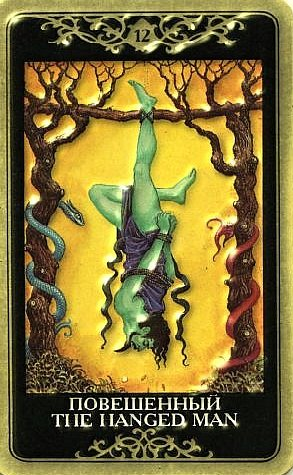

Повешенный приобрел репутацию одной из самых неблагоприятных карт, какие могут появиться в раскладе. Спорить с этим, пожалуй, не приходится – описываемый опыт определенно не будет простым и легким.

Вопрос может касаться многолетней учебы в высшем учебном заведении, приобретения недвижимости или другого ценного имущества в кредит и так далее.
Очевидно, что вопрошающий собирается ввязаться во что-то (Повешенный связан), «зависнуть» на каких-то целях и образе жизни на длительный срок (Повешенный висит), и сам, некоторым образом, превратиться в «недвижимость» (утратить возможность распоряжаться своими деньгами, временем или другими ресурсами, поскольку они посвящены избранной цели).
Случится ли это? Если выпал Повешенный, то Таро сообщает – да.
Таким образом, это будет позитивный ответ. Везде, где подразумевается преданность долгу, Повешенный на своем месте.
В качестве опорной или итоговой карты расклада он любит сообщать, что никакого продвижения вперед не будет, так что сейчас лучше отказаться от намеченного и оставить тему в покое.
Все это потребует гораздо больше времени, чем хотелось бы.
Раз выпал Повешенный, что-то испытывает наше терпение или предлагает освоить урок смирения.
На других позициях карта описывает необходимость каких-то жертв и нового подхода.
Есть цели, ради которых можно пережить что-то неприятное. Если ты выдержишь, жертва полностью окупится.
Но жертва понимается здесь не как бесплодная потеря чего-то дорогого, а как отдача во имя приобретения еще более необходимого.
Главный урок карты – понять, что жертва добровольна, потому что ЦЕЛЬ ТОГО СТОИТ. И жертва, и цель могут быть любыми – физическими, интеллектуальными, духовными.
Но все это трудное и возможно затяжное («искупительное») время надо помнить - жертва добровольная и цель того стоит.
Эта стадия означает также период передышки между значительными событиями, пребывание в неопределенности, в подвешенном состоянии.
Судьба замирает в невесомости.
Время апатии, отсутствие продвижения вперед и капитуляция перед внешними факторами, оказывающими сильное влияние.
Нахождение в состоянии волевого ступора, паралича, потеря контроля над происходящим, невозможность повлиять на события.
По Повешенному человек часто чувствует себя наказанным и нередко вопиет «За что?!»
Мэри Грир замечает: это всего лишь описание того, что происходит с человеком, погрязшим в материальных заботах и отказывающимся видеть, чего от него требует Дух, следующая ступень развития сознания.
Когда так называемый реальный мир зависает, у человека появляется возможность понять это.
Как правило, этот Аркан несет неспособность к внешней активности, заточение в монастыре духа.
Воля связана по рукам и ногам, все силы уходят на духовную работы, смену точки сборки.
Под давлением внешних обязательств собственная пассивность воспринимается мучительно.
В любом случае, человек чувствует себя несвободным в своих решениях: не может делать либо то, что хочется, либо то, что надо.
Надо набираться терпения и смирения, сохранять спокойствие, ждать, воспринимать ситуацию с ее светлой стороны.
Может выпасть тогда, когда имеется довольно четкое представление, что необходимо сделать, но что-то не позволяет предпринять это действие.
Это карта принятия судьбы, поучения долгу и терпению.
Человека могут ограничить обстоятельства, вплоть до понимания ее глубинного смысла, а потом смирение диктуется уже этим пониманием.
Повешенный отучает цепляться – за контроль, власть, удобства, привязанности.
Он не поучает, как Иерофант, не призывает к суду, как Правосудие, не громит, как Башня. Он просто….подвешивает. Лишая власти и контроля, он дарит подлинную смиренную готовность к принятию перемен, жизненную гибкость, эластичность мышления.
Повешенный нередко выпадает тогда, когда происходящее кажется странным, трудным для осмысления.
Творятся непостижимые вещи - то, чего на самом деле быть не может.
Но это не должно слишком пугать, лучше постараться быть открытым всему новому, посмотреть на мир другими глазами.
Двенадцатый Аркан говорит: если привычный мир встал c ног на голову, помни, что и ты можешь сделать то же самое.
Терпеливо жди развития событий.
Учись наблюдать, но старайся при этом сохранить ясность мышления и спокойствие души.
Учись, терпи, сохраняй ясность духа – и жди.
Еще более важно сохранить равновесие между тем, что есть в тебе, и тем, что происходит снаружи - не надо пытаться уйти в себя и ограничиться миром собственных переживаний.
По этой карте идет переворот всей системы ценностей (но не разрушение по Башне, а именно парадоксальное переустройство «с ног на голову»).
Парадокс, взгляд с другой точки зрения, полное изменение в сознании (оно может быть мучительным само по себе, если человеку тяжело пожертвовать привычным мнением).
На практике эта карта означает необходимость учиться новому.
Однако и людям взрослым она советует не держаться за старые представления, а попробовать найти новую точку зрения.
Дух этой карты - преданность, самоотдача, самоотречение ради высшей цели (сходно с принятием монашеских обетов).
Отказ от чего-то ради чего-то лучшего, ведомого тебе одному, сокровенного.
Основное положительное значение этой карты: рост мудрости, интуиции. Это также сильная карта ясновидения.
ЛИЧНЫЕ ОТНОШЕНИЯ
Невозможность контролировать происходящее в отношениях, свое поведение и поведение партнера.
Ощущение себя бессильной жертвой и хорошим материалом для психотерапевта.
Вынужденность поступиться своими желаниями, страстями и свободой ради отношений.
Интуитивно понятно, что Повешенный, выпавший в раскладе на отношения, символизирует какой-то кризис.
Причем не начало кризиса, как Башня, не окончание его, как Десятка Мечей, а перманентный вялотекущий кризис, которому не видно ни начала, ни конца.
Впрочем, финал иногда просматривается – в эфемерных, не устоявшихся отношениях, которые «висят на волоске» при появлении Двенадцатого Аркана велик риск все потерять.
Часто в устоявшихся отношениях эта карта соответствует ощущению, что все замерло, а то и умерло.
Апатия, тупость, скука, спад.
Беспомощная остановка, бессилие, кризис, это состояние длится дольше, чем можно было бы предположить и дальше, чем хотелось бы.
Ощущение «сглаза», отношения неплодотворны, секса никакого, что дальше – непонятно.
В сочетаниях с картами, намекающими на любовный треугольник (например, Влюбленные, Тройка Мечей, Тройка Чаш, Шестерка Пентаклей), Повешенный показывает человека, «распятого» между двумя полюсами и четко говорит, что страдают все.
В этой ситуации нет победителей, а попытки сделать счастливыми всех заканчиваются неописуемыми страданиями.
Повешенный ничего не предпринимает, потому что не может ничего предпринять и не представляет, что могло бы быть выходом в этой ситуации.
Для одиноких людей Повешенный отмечает периоды тщетного поиска отношений, указывая, что в ближайшее время на создание пары рассчитывать не приходится, поскольку перед душой определенно стоят другие задачи.
Бесплодные попытки познакомиться и завести роман не добавят вопрошающему радости.
Карта может говорить о том, что создание отношений стало чем-то вроде навязчивой «идеи фикс», в то время как личностно человек к ним не готов (в частности, не так уж готов на жертвы и альтруизм, которых потребует совместное пребывание изо дня в день и из ночи в ночь).
В общем, Повешенный нередко нелестно сообщает – эгоизм и зацикленность на себе и своих потребностях, вот все, что у тебя сейчас есть.
И пока это не изменится, судьба не предложит тебе свадебный лимузин, в частности.
В конце концов, на брак венчают «мученическими» венцами, и неготовность принимать испытания и ограничения – плохая база для него.